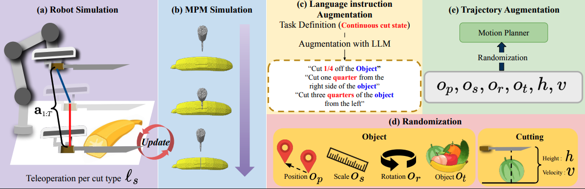
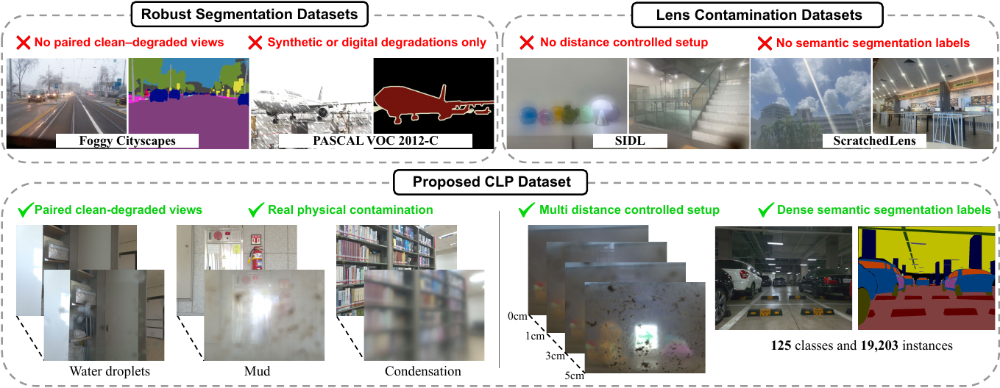
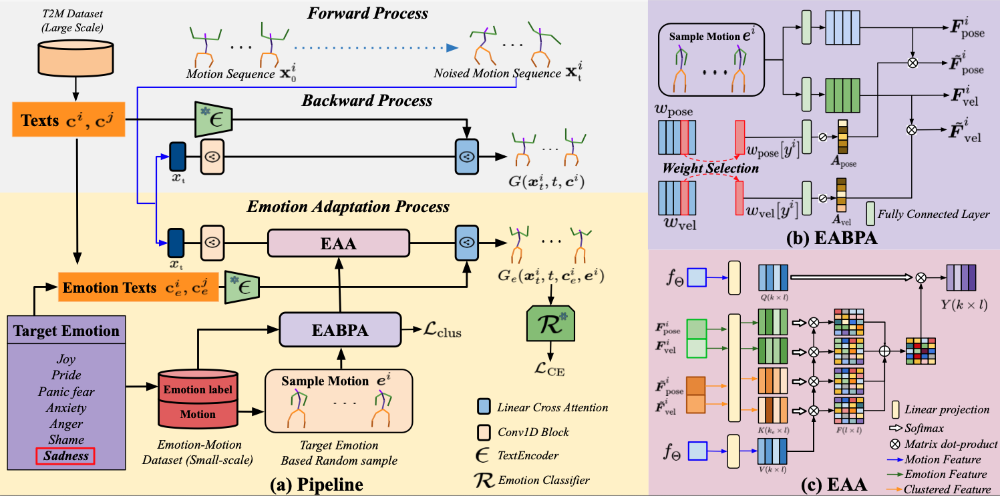
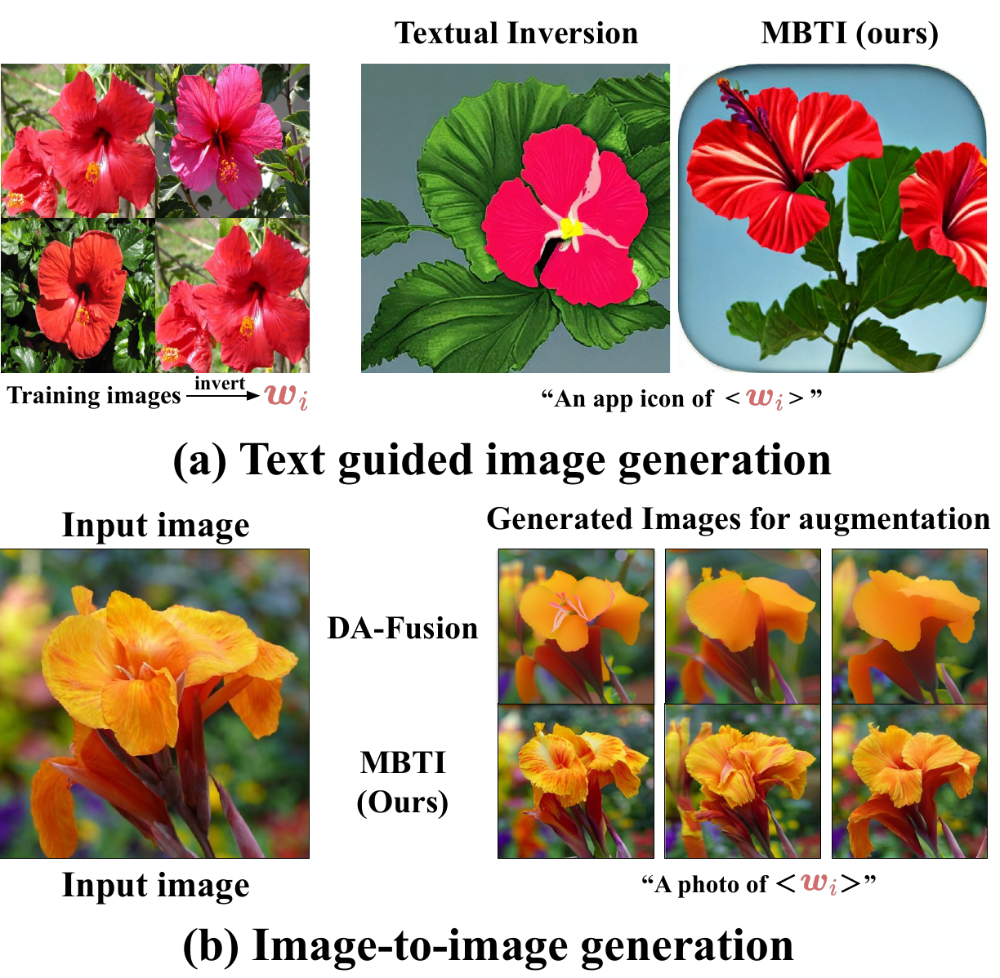
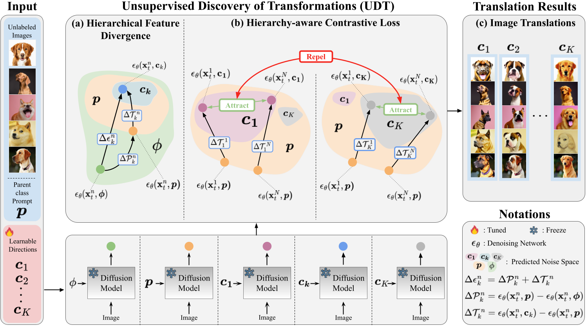

ECCV 2026CO-FIRST
I work on world models and vision-language-action (VLA) models — learning how the world evolves and turning perception and language into action, for simulation, data generation and end-to-end driving.
Research scientist at Motifdrive, an autonomous-vehicle start-up, focusing on world models and VLA. I research world models for synthetic data generation, simulation and augmentation in end-to-end driving, build VLM-based frameworks for large-scale data curation and scenario mining, and contribute to 3D object detection on multi-modal (LiDAR + camera) sensor data.
On the research side (Reality Lab, Soongsil University), I work on multimodal generative models — fine-grained image generation and emotion-aware text-to-motion — methods that keep detailed semantics instead of averaging them away. Statistician by training, vision researcher by obsession.
World models for synthetic data, simulation and augmentation in end-to-end driving; VLM-based data curation, annotation and scenario-mining workflows; 3D object detection with LiDAR–camera sensor fusion.
Multimodal generative models: fine-grained image generation, emotion-aware text-to-motion. TA for Deep Learning (2024) & Machine Learning (2025).
AI-powered XR Smart Space (SME R&D Support Program): AR scene reconstruction with 3D Gaussian Splatting and automatic box-collider estimation for real-time Unity XR interaction.





* equal contribution
World models for synthetic data generation and simulation in end-to-end driving, inspired by large-scale frameworks such as AlpaSim — controllable scenario generation, novel-view and trajectory-based simulation to widen coverage and reduce reliance on real-world collection.
Pipelines that use vision-language models to understand, categorize and retrieve complex driving scenarios, automatically surfacing rare and safety-critical samples for training and evaluating end-to-end driving models.
An annotation framework for 2D/3D object detection and HD map tasks — vision-language reasoning, automated consistency checks and efficient interaction with large-scale sensor data to cut manual effort.
Reconstructing interactive virtual spaces in AR with 3D Gaussian Splatting; a system that automatically estimates box colliders from reconstructed geometry, enabling real-time interaction in Unity-based XR environments.